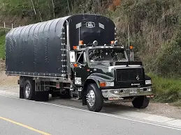

me gustan mucho los carros grandes en especial los de transporte de carga, toda mi vida he estado relacionado con este tipo de veiculos, he aprendido de ellos y tengo una gran pasión por estros carros.